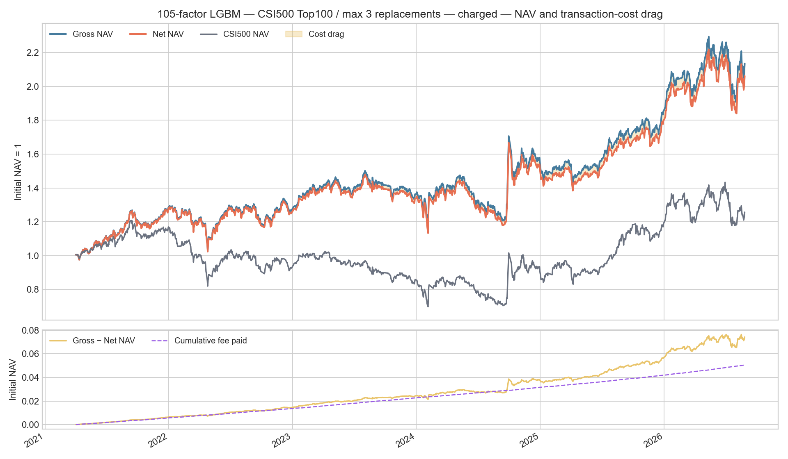
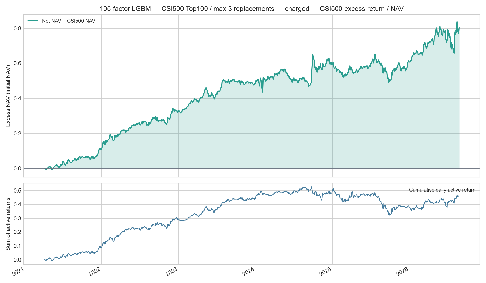
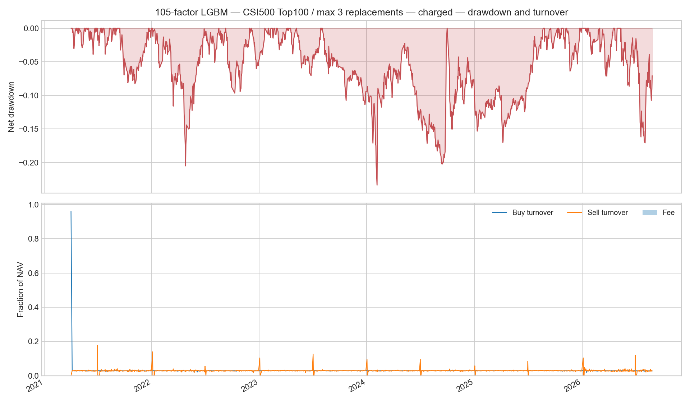

Return basis: T+1 open to T+2 open; benchmark: CSI500; costs use the portfolio daily ledger.
| days | 1311 |
|---|---|
| start | 2021-04-02 |
| end | 2026-08-27 |
| gross_total_return | 113.5590% |
| net_total_return | 106.1371% |
| csi500_total_return | 25.6927% |
| net_excess_wealth_vs_csi500 | 64.0008% |
| gross_annualized_return | 15.7017% |
| net_annualized_return | 14.9177% |
| csi500_annualized_return | 4.4935% |
| net_annualized_excess_vs_csi500 | 0.0998 |
| average_daily_active_return_bps | 3.5270 |
| annualized_tracking_error | 9.1251% |
| net_sharpe | 0.7283 |
| information_ratio | 0.9740 |
| max_drawdown | -23.3614% |
| average_buy_turnover | 2.9828% |
| average_sell_turnover | 2.9198% |
| average_fee_bps | 0.2699 |
| cumulative_fee_paid_on_initial_nav | 5.0496% |
| average_holding_count | 99.8528 |


